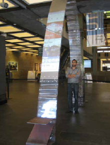

2011
2 Months
The proposals for a vibrant and highly visual ‘Urban Digital Media’ pavilion,
located right at the heart of UTS in the foyer of our tower.
Why a pilot pavilion?
The proposal is a development of the Urban Digital Media (UDM) strategic plan.
It offers a pilot project which can subsequently be developed
and rolled out for other aspects of the campus - initially and
specifically for the digital spaces of the Broadway building.
The earlier UDM plan argued for the University to take the lead in pushing a digital campus,
an idea which has yet to be embraced seriously by Universities around the world.



|